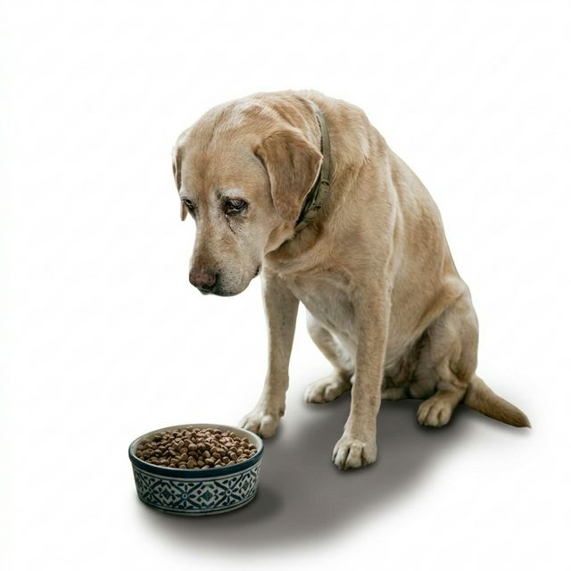

Seu cachorro cheira a comida…
e simplesmente vai embora?
Mesmo com fome — ele ignora completamente o que você coloca no pote.
E quanto mais você tenta…
mais ele parece rejeitar.
E você fica ali, tentando não se importar… mas no fundo dói.
E no fundo… você sabe que isso não é normal.
Não é que ele não quer comer.
É que, sem perceber, você ativou um padrão que faz ele rejeitar comida.
E quanto mais você tenta "resolver"…
mais esse comportamento se reinforce.
O problema não está na comida.
Está no comportamento que foi criado sem você perceber.
O Protocolo Apetite Ativo atua exatamente nisso:
- Ativando estímulos de olfato que despertam interesse imediato
- Ajustando a textura para quebrar a rejeição
- E criando antecipação alimentar — fazendo o cachorro querer comer
